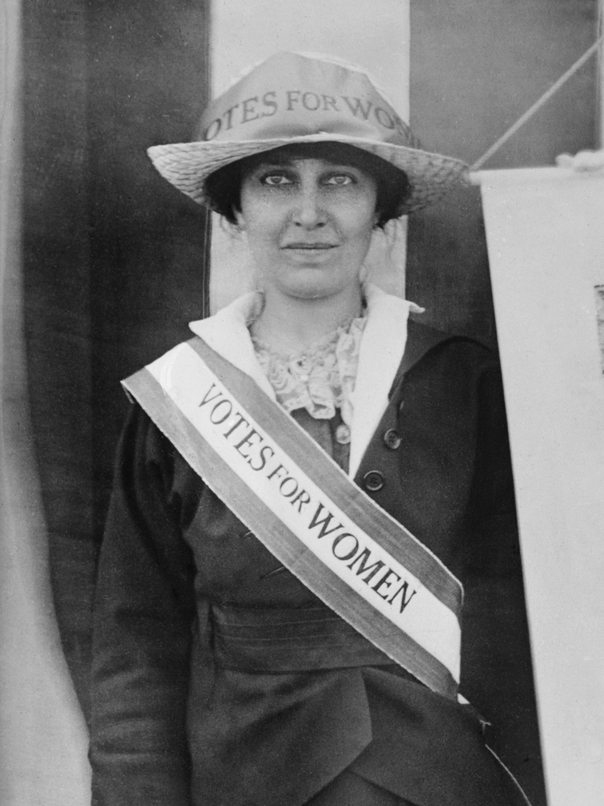

Leaders of The Birth Control Movement
Margaret Sanger
Born: September 14, 1879
Died: September 6, 1966
Coined the term birth control(1914)
Opened the first birth control clinic(1916)
Wrote books on birth control leading her to be prosecuted because of the Comstock Act(1916)
Founded the Planned Parenthood Federation of America(1916)
Mary Dennett
Born: April 4, 1872
Died: July 25, 1947
Wrote a famous pamphlet called “The Sex Side of Life” originally to educate her kids but was distributed later, leading to her being prosecuted by the Comstock act(1915)
Co founded the National Birth Control League(1921)
Rallied supporters to fight against laws that made birth control information illegal, like the Comstock Act(1930)

Katharine McCormick
Born: April 4, 1872
Died: July 25, 1947
One of the first women to graduate from Massachusetts Institute of Technology in 1904 with a degree in biology(1904)
Helped smuggle over 1000 diaphragms from europe into America(1920s)
Made large orders for diaphragms by posing as a german/french scientist(1920s)
Established the Neuroendocrine Research Foundation because her husband had schizophrenia and she believed it could have been cured with hormone treatment(1927)
Donated 2 million or (20 million today) to help develop the first oral birth control pill(1953)